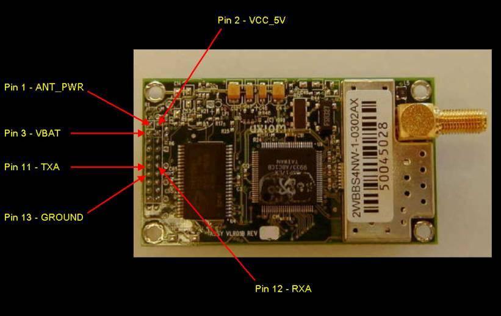

Minimum connections to make receiver work:
|
1 |
I |
ANT_PWR |
DC power to active antenna. Connect 5 or 3 volts, depending on the active antenna being used. Typically 20 to 30ma. |
|
2 |
I |
VCC_5V |
Regulated 5.0VDC +/- 5% input
power. |
|
3 |
I |
VBAT |
Battery backup input. 2V to VCC +
0.5 V. |
|
11 |
O |
TXA |
Port A Serial Transmit Data. VCC
CMOS levels. |
|
12 |
I |
RXA |
Port A Serial Receive Data. VCC
CMOS levels. |
|
13 |
I |
GND |
Ground |

Notes: Pin 3, VBAT is not required but highly desirable to connect. If this pin is connected, the receiver will do a warm start and acquire satellite signals very quickly.
Pin 12, RXA is not needed if connecting to the www.byonics.com TinyTrak.
PC Serial Port Connections – Connecting the receiver directly to a computer with a serial port:
Pin 11, TXA will connect to the RS-232 DB9’s Pin 2
Pin 12, RXA will connect to the RS-232 DB9’s Pin 3
Pin 13, Ground Will connect to the RS-232 DB9’s Pin 5